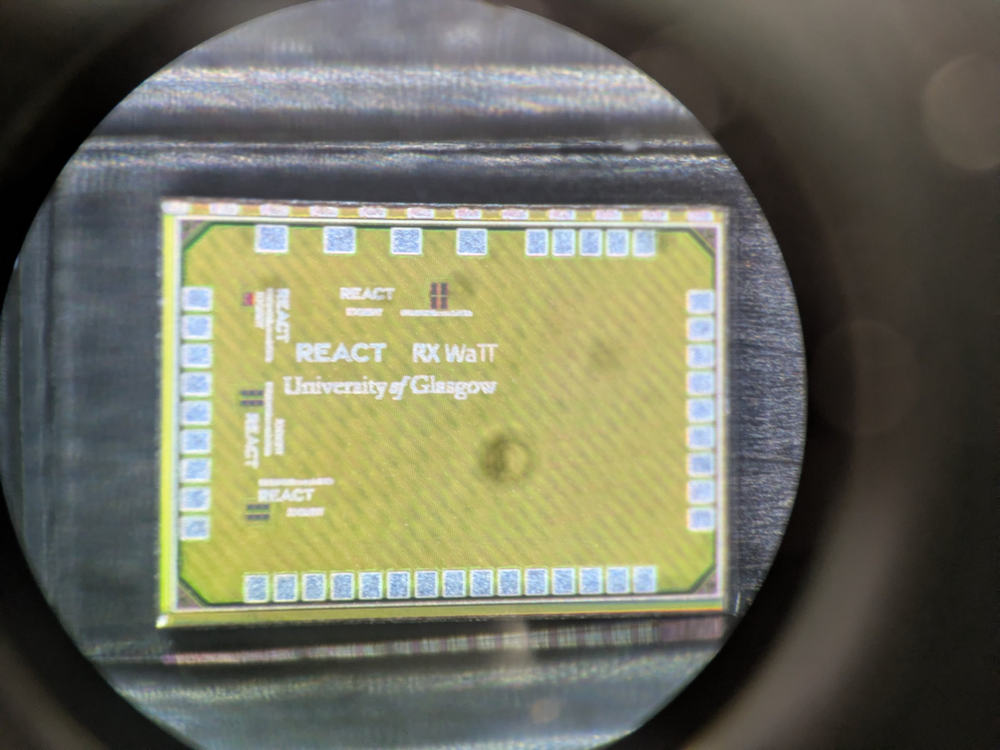
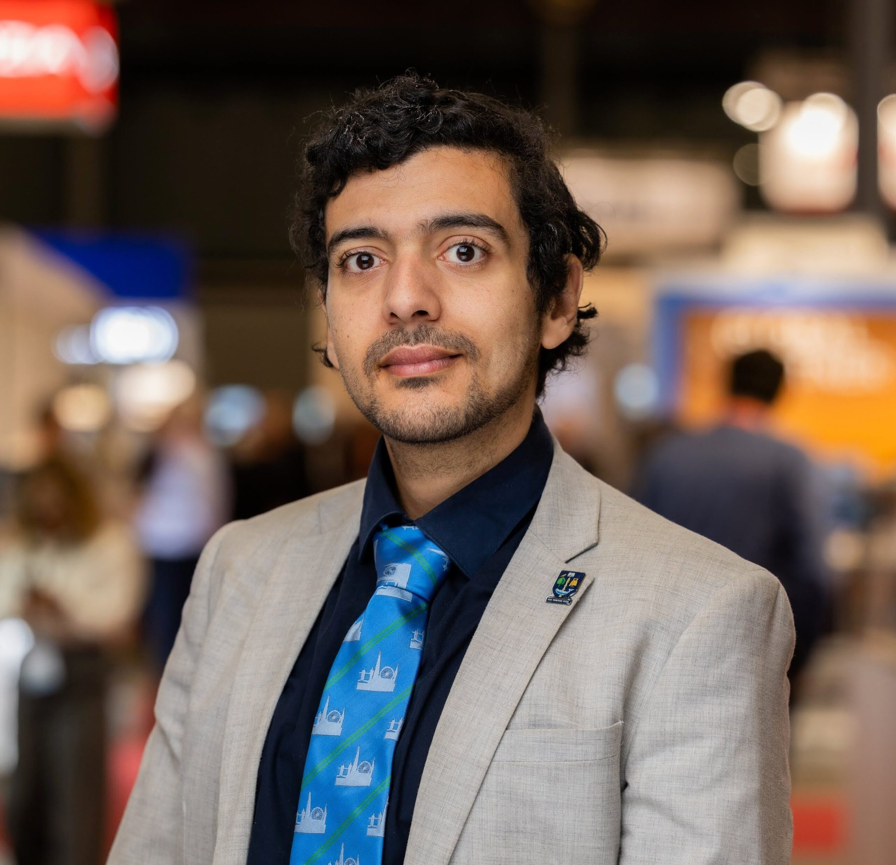

UK Intelligence Community Research Fellowship

Fellowship Overview
The UK Intelligence Community (IC) Postdoctoral Research Fellowship, "Radio Frequency-Enabled Multi-Source Energy Harvesting in Inaccessible Locations," was awarded by the Royal Academy of Engineering and the Office of the Chief Science Adviser for National Security (£249k FEC, 2021–2023).
The project investigated on-demand RF power delivery in constrained environments – from ultra-miniaturised sensors to devices operating in lossy biological media, where safety is critical – combining a single energy-harvesting source with many co-located "satellite" systems. Beyond RF engineering, it explored sustainable and scalable materials, including flexible and printable devices that avoid critical raw materials, as building blocks for RF power delivery and harvesting.
Its approach to maintenance-free sensing was carried forward through a derivative EPSRC Impact Acceleration Account project, REMINDER ("RF-Powered Sensing in Energy-Deprived Environments," £38k, 2023–2024), translating the fellowship's energy-harvesting research toward deployable sensing applications.
Status: Completed 2021–2023. This fellowship established the GREEN Electronics Lab at Glasgow; the work is now continued through EPSRC and UKRI funding, including a Programme Grant and the REACT Centre.

Principal Investigator
Dr Mahmoud Wagih, Reader, James Watt School of Engineering
Mahmoud's route to the fellowship ran through industry as much as academia: he was a Hardware Verification Engineering Intern (2018) and then a Research Intern (2020) at Arm Ltd, before completing an award-winning PhD in rectenna (RF energy-harvesting antenna) design at the University of Southampton in 2021 – recognised with the EurAAP Per-Simon Kildal Award for the best PhD in antennas and propagation in Europe.
That combination of industrial and academic energy-harvesting experience shaped the fellowship's two industrial partnerships: with Arm, developing RF-powered computing, and with Perpetuum (part of Hitachi Rail), building sustainable condition-monitoring sensors for the rail industry.
He joined the University of Glasgow in June 2022 as a Royal Academy of Engineering Research Fellow and Lecturer, and is now a Reader and IEEE Distinguished Microwave Lecturer.

Work and Partnerships
Started at Southampton's Arm-ECS Research Centre and continued at Glasgow, the fellowship connected wireless power, RF sensing and semiconductor integration expertise across both institutions, and directly shaped the RF-enabled sensing and energy-harvesting projects now running in the GREEN Electronics Lab.
We welcome opportunities to connect with researchers, industry and end users working on related sustainable electronics challenges.